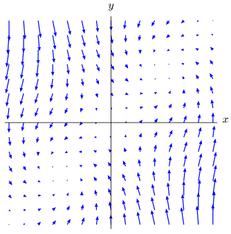
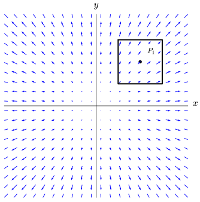
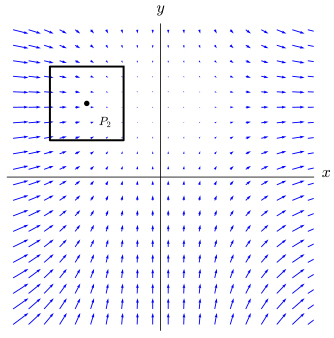
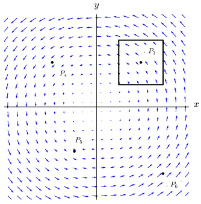
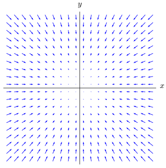
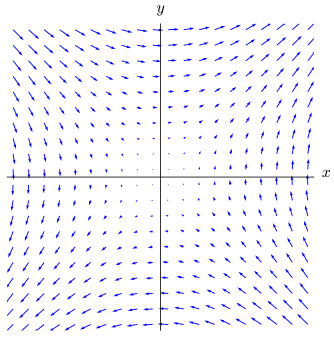
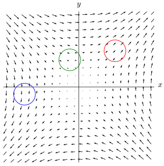
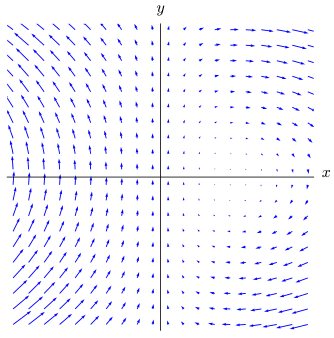
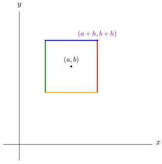

How can you measure where a vector field’s strength is increasing or decreasing?
What does the divergence of a vector field measure and how can you visually estimate whether the divergence of a vector field is positive or negative?
As we saw in Section 13.1, there are many physical and theoretical representations for vector fields. A natural question is “Where exactly is the vector field created?” With the vector field in Figure 13.6.1, imagine sketching a curve that follows the direction of the vector field by treating the vectors in the vector field as tangent vectors to your curve. No matter where you start, you should observe that the vector field decreases in strength as you move along the flow. We wish to understand (as a function of position), how much of the vector field is created (or destroyed) at a given location.

A vector field with vectors shortest along the line \(y=x\) and longer as distance from that line increases. Vectors in the fourth quadrant point primarily in the positive \(x\)-direction, although none are truly vertical. Vectors in the second quadrant point primarily in the negative \(x\)-direction, although none are truly vertical. Vectors in the first and third quadrants exhibit a form of counterclockwise rotation.
Figure13.6.1.A vector field with changing strength
Preview Activity13.6.1.
In this preview activity, we will look at several two-dimensional vector fields and try to assess when the vector field has increased or decreased in strength over a given region. We begin with graphs of the three vector fields, \(\vF\text{,}\)\(\vG\text{,}\) and \(\vH\text{.}\) Parts a, b, and c ask you to answer the same three questions about the vector field and square illustrated in each of the figures. Part d asks you to think further about the third vector field.

A vector field with vectors radiating from the origin. The length of vectors increases as distance from the origin increases. There is a square in the first quadrant with sides parallel to the coordinate axes. Centered in the square is a point labeled \(P_1\text{,}\) which appears to lie on the line \(y=x\text{.}\)
Figure13.6.2.Vector Field \(\vF\)

A vector field with vectors below the \(x\)-axis pointing primarily up near the axis and primarily to the right farther away from the axis. Above the \(x\)-axis, vectors point primarily to the right. Vector magnitudes are shortest near the positive \(y\)-axis. There is a square in the second quadrant with sides parallel to the coordinate axes. Centered in the square is a point labeled \(P_2\text{,}\) which appears to lie on the line \(y=-x\text{.}\)
Figure13.6.3.Vector Field \(\vG\)

A vector field in which vectors circulate around the origin as if tangent vectors to concentric circles centered at the origin. Vector magnitude increases as distance from the origin increases. There is a square in the first quadrant with sides parallel to the coordinate axes. Centered in the square is a point labeled \(P_3\text{.}\) There is a point labeled \(P_4\) in the second quadrant that is the reflection of \(P_3\) across the \(y\)-axis. In the third quadrant, there is a point \(P_5\) that is closer to the \(y\)-axis than to the \(x\)-axis. In the fourth quadrant, there is a point labeled \(P_6\) that appears to be on the line \(y=-x\) but is farther from the origin than \(P_3\) or \(P_4\text{.}\)
Figure13.6.4.Vector Field \(\vH\)
(a)
For each of the vector fields \(\vF\text{,}\)\(\vG\text{,}\) and \(\vH\) and the square centered on \(P_1\text{,}\)\(P_2\text{,}\) and \(P_3\) (respectively), which statement do you think best applies?
More of the vector field is going into the square than going out.
Less of the vector field is going into the square than going out.
The same amount of the vector field is going into the square as is going out.
Solution.
There is less of \(/vF\) going into the region around \(P_1\) than is going out. There is more of \(/vG\) going into the region around \(P_2\) than is going out. There is the same amount of \(/vH\) going into the region around \(P_3\) than is going out.
(b)
For each of the vector fields \(\vF\text{,}\)\(\vG\text{,}\) and \(\vH\) (and corresponding square), does your answer to part a suggest that the vector field is being created, destroyed, or is unchanging in strength inside the square? Write a sentence to explain your thinking for each vector field.
Solution.
Because there is less of \(/vF\) going into the region around \(P_1\) than is going out, this suggests that \(vF\) is being destroyed around \(P_1\text{.}\) Because there is more of \(/vG\) going into the region around \(P_2\) than is going out, this suggests that \(vG\) is being created around \(P_2\text{.}\) Because there is the same amount of \(/vH\) going into the region around \(P_3\) than is going out, this suggests that \(vH\) is not changing stength around \(P_3\text{.}\)
(c)
Would the answer to parts a or b change if you used a smaller square centered on \(P_1\text{,}\)\(P_2\text{,}\) and \(P_3\) for the corresponding vector fields? Write a sentence to explain your thinking for each vector field.
Solution.
A smaller square would not change the argument to any of these questions. The vector field \(\vF\) will be larger on the top and right of \(P_1\) than on the bottom and left. The vector field \(\vG\) will be larger on the top, bottom, and left of \(P_2\) than on the right (which is the only boundary piece where \(\vG\) is flowing out of the region). The vector field \(\vH\) will have the same amount flowing in on the bottom and right as is flowing out on the top and left (regardless of size of the square).
(d)
Thinking now only about the vector field \(\vH\text{,}\) would your answers to parts a, b, or c change if you considered squares around points \(P_4\text{,}\)\(P_5\text{,}\) or \(P_6\text{?}\) Write a couple of sentences to explain your thinking.
Solution.
For all points shown and regardless of size of the square used, the vector field \(\vH\) will have the same amount flowing in and out of the square. This is because \(\vH\) has a purely rotational aspect, so the amount rotation into a given square will be exactly matched by an amount rotation out on the opposite side.
Subsection13.6.1Definition of the Divergence of a Vector Field
We begin this subsection by stating a definition that captures analytically the ideas you reasoned aboug geometrically in Preview Activity 13.6.1. After the statement of the definition, we discuss what it means.
In two dimensions, the definition is analogous by omiting the third term.
The divergence of a vector field is a scalar measurement at a point that measures how the strength of the vector field is changing as we look in small neighborhoods around our point. While Subsection 13.6.2 will show the details for how the divergence is defined, we can make the following qualitative argument: If we are looking at how the strength of the vector field is changing in a small neighborhood of the point \((a,b)\text{,}\) then we only need to look how fast the horizontal component is changing horizontally and how the vertical component is changing vertically. We make this measurement of changing strength of the vector field by measuring how much of a vector field flows into versus out of a small neighborhood of our point (as was done in Preview Activity 13.6.1). When looking at a small neighborhood of the point (as shown by the square in Figure 13.6.15), only the change of the horizontal component of the vector field contributes to flow in or out on the sides and only the change in the vertical component contributes to flow in or out on the top and bottom.
From our conceptual description above, \(\divg(\vF)\) being positive means that our vector field is increasing in strength. Since the divergence of \(\vF\) does not have a dependence on the input point, that means the vector field is increasing in strength, regardless of which point we consider. In the interactive element below, you can change the point you would like plotted and the size of the region around the point. You should see that regardless of what point you select or how small you make the region around the point, there will be more of the vector field flowing out of the region than in.
Figure13.6.7.An interactive plot of \(\vF=\langle x,y\rangle\) with point \((a,b)\) and region plotted
Example13.6.8.
Let \(\vG=\langle y,-x \rangle\text{.}\) We can compute that
From our conceptual description of divergence, \(\divg(\vG)\) being zero means that our vector field is not changing in strength. Since the divergence of \(\vG\) does not have a dependence on the input point, that means the vector field is not changing in strength, regardless of which point we consider.
In the interactive element below, you can change the point you would like plotted and the size of the region around the point. You should see that regardless of what point you select or how small you make the region around the point, there will be exactly as much of the vector field flowing into the region as is flowing out (on the other side).
Figure13.6.9.An interactive plot of \(\vG=\langle y,-x \rangle\) with point \((a,b)\) and region plotted
Example13.6.10.
Let \(\vH=\langle x^2-y,y^2-x \rangle\text{,}\) which means that
In constrast to the previous examples, you can see that the value of divergence of \(\vH\) will depend on the input point choosen. For instance, \(\divg(\vH)\) will be \(4\) at the point \((1,1)\text{.}\) This means that for a small region around \((1,1)\) there should be more of the vector field flowing out of the region than into it. Use the interactive element below to verify this.
Figure13.6.11.An interactive plot of \(\vH=\langle x^2-y,y^2-y\rangle\) with point \((a,b)\) and region plotted
The divergence of \(\vH\) at the point \((-1,1)\) will be zero. If you look at this point in Figure 13.6.11, you will see that there is exactly as much of the vector field flowing into the region around \((-1,1)\) as is flowing out.
The divergence of \(\vH\) at the point \((-2,0)\) is \(-4\text{.}\) This should mean that there is more of the vector field flowing into the region around \((-2,0)\) than is flowing out. You should be able to see how difference regions of the \(xy\)-plane will have different values for \(\divg(\vH)\text{.}\)
Another way to “see” divergence on a vector field plot is to look at what happens to the magnitude of vectors as you move along the flow of the vector field. If the vector field is increasing in magnitude as you move along the flow of a vector field, then the divergence is positive. If the vector field is decreasing in magnitude as you move along the flow of a vector field, then the divergence is negative. If the vector field does not change in magnitude as you move along the flow of the vector field, then the divergence is zero. Also, remember that the divergence of a vector field is often a variable quantity and will change depending on location. The next activity asks you to graphically examine the divergence of three vector fields.
Activity13.6.2.Graphical Representations of Divergence.
(a)
For this part of the activity, consider the vector field \(\vF\) shown in Figure 13.6.12.

Figure13.6.12.Vector field \(\vF\)
(i)
Draw a circle in the first quadrant of the vector field \(\vF\) depicted in Figure 13.6.12. Based on the flow of the vector field into or out of the circle, do you think the vector field is increasing in strength, decreasing in strength, or not changing in overall strength in the first quadrant?
Solution.
Putting a circle in the first quadrant, you will see that longer vectors are entering the circle from the top and right than are leaving the circle from the left and bottom. This is true regardless of where you put the circle. Thus, there is more of the vector field entering than leaving the circle and we can conclude the vector field is decreasing in strength in the first quadrant.
(ii)
As you move along the flow of the vector field in the first quadrant of Figure 13.6.12, does your vector field increase in magnitude, decrease in magnitude, or have constant magnitude?
Solution.
The lengths of the vectors in \(\vF\) are decreasing as you move toward the origin (which corresponds to the direction of flow).
(iii)
Draw a circle in each of quadrants II, III, and IV. Based on the flow of the vector field into or out of your circles, do you think the vector field is increasing in strength, decreasing in strength, or not changing in overall strength in quadrants III, II, and IV?
Solution.
The same argument as from part (i) applies since more of \(\vF\) enters on the sides opposite of the origin than leaves on the side towards the origin.
(iv)
As you move along the flow of the vector field in the third quadrant of Figure 13.6.12, does your vector field increase in magnitude, decrease in magnitude, or have constant magnitude.
Solution.
The lengths of the vectors in \(\vF\) are decreasing as you move toward the origin (which corresponds to the direction of flow).
(v)
Based on your arguments above, describe why the divergence of \(\vF\) is negative for all points in the \(xy\)-plane.
Solution.
At all points in the plane, there is more of \(\vF\) entering the neighborhood of the point than is leaving the neighborhood. Therefore, the divergence of \(\vF\) is negative for all points in the plane.
(b)
Look at the plot of the vector field \(\vG\) in Figure 13.6.13 and state whether you think the vector field is increasing in strength, decreasing in strength, or not changing in overall strength in each of the four quadrants. You can make your argument in terms of the change in magnitude along the flow of the vector field or in terms of the net flow into or out of a small region on the plane. You may need to make separate arguments for each of the four quadrants.

A vector field in which vector magnitudes increase as distance from the origin increases. Vectors are oriented as if they follow hyperbolas with asymptotes \(y=x\) and \(y=-x\text{.}\) Vectors above both asymptotes or below both asymptotes result in counterclockwise rotation. The other vectors result in clockwise rotation.
Figure13.6.13.Vector field \(\vG\)
Solution.
If you look at the figure below, you can see that a careful examination of the amount of the vector field entering and leaving a circle is balanced, regardless of where you put your circle. This is a bit subtle but you have to look at the total amount of vector field entering the region and not just the length of the vectors. A small amount entering over a larger length of boundary can cancel out a set of longer vectors leaving the region through a short segment of the boundary.

(c)
Look at the plot of the vector field \(\vH\) in Figure 13.6.14 below and state whether you think the vector field is increasing in strength, decreasing in strength, or not changing in overall strength in each of the four quadrants. You can make your argument in terms of the change in magnitude along the flow of the vector field or in terms of the net flow into or out of a small region on the plane. You may need to make separate arguments for each of the four quadrants.

A vector field having longer vectors where \(x \lt 0\text{.}\) For \(x>0\text{,}\) vectors appear to get longer as distance from the \(x\)-axis increases.
Figure13.6.14.Vector field \(\vH\)
Solution.
In the first quadrant, you will see that vectors are getting longer as you move along the flow of the vector field. Thus the vector field is increasing in strength in QI. Similiarly, you can see that the lengths of vectors decreasing as you move along the flow of the vector field in QIII and QIV and increasing in length along the flow in QII. Thus, the vector field is increasing in strength in QII and decreasing in strength in QIII and QIV.
The next activity of this section asks you to do some algebraic calculations of divergence using Definition 13.6.5.
Activity13.6.3.
(a)
Calculate the divergence of the vector fields given below.
\(\displaystyle \vF(x,y)=\langle -x,-y\rangle\)
\(\displaystyle \vG(x,y)=\langle y,x \rangle\)
\(\displaystyle \vH(x,y)=\langle xy,1-x\rangle\)
Solution.
\(\displaystyle \divg(\vF(x,y))= =-1+(-1)=-2\)
\(\displaystyle \divg(\vG(x,y))= 0+0=0 \)
\(\displaystyle \divg(\vH(x,y))= y+0=y \rangle\)
(b)
Explain how your answers to the questions in Activity 13.6.2 can be explained by using your results from part a of this activity.
Solution.
As you saw in part (a) of Activity 13.6.2, we had a divergence that was negative for every point in plane and we have a calculated value of \(\divg(\vF(x,y))= -2\text{.}\)
\(\displaystyle \divg(\vG(x,y))= 0 \)
As you saw in part (c) of Activity 13.6.2, we had a divergence that was negative for points in quadrants III and IV and positive divergenge for quadrants I and II. A careful examination of the change in the strength of the vector field in part (c) of Activity 13.6.2, shows that the divergence gets large as you move vertically on the graph. This lines up exactly with \(\divg(\vH(x,y))= y \rangle\text{.}\)
Subsection13.6.2Measuring the Change in Strength of a Vector Field
In this subsection, we examine the details of how to measure the density of the “creation” or “destruction” of the vector field in a classic calculus fashion. Specifically, we will measure how the strength of the vector field changes in a region around a point. Next, using a limit, we examine what happens to our measurement as we shrink the region. Because vector fields change in a continuous fashion, the vector fields don’t actually change at a single point. Rather, we will measure the density for the change in strength of the vector field.
We will develop all of our measurements in a two dimensional setting for now. However, our arguments can be applied to three (or more) dimensions. We start in the same fashion as in Preview Activity 13.6.1. Namely, we will look at how much of the vector field is going into or out of a square centered at a point \((a,b)\text{.}\) For this development, we will consider a two-dimensional vector field given by \(\vF(x,y)=\langle{F_1(x,y),F_2(x,y)}\rangle\text{.}\)

A square with sides parallel to the coordinate axes and centered at the point \((a,b)\text{.}\) The upper-right corner of the square is labeled \((a+h,b+h)\text{.}\)
Figure13.6.15.A square around the point \((a,b)\)
We can parametrize the top edge of the box by \(\vr_{\text{top}}(t) = \langle a+t,b+h\rangle\) with \(-h\leq t\leq h\text{.}\) Similarly, the bottom, right, and left can be parametrized by
all of which use parameter values in \(-h\leq t\leq h\text{.}\)
The amount of the vector field \(\vF\) that is created inside the square around the point \((a,b)\) can be measured by the net amount of the vector field coming into or going out of the square. The amount of vector flow that goes through each of the boundary segments can be measured by looking at just the orthogonal component of the vector field on each particular segment. For instance, on the top segment, the vertical component \(F_2\) determines how much of the vector field goes in or out of the square. Integrating just the vertical component \(F_2\) of the vector field \(\vF\) over the points on the top segment of our square will therefore measure how much of the vector field goes through the top of the square.
The same argument applies to the bottom edge of our square. Similarly, if we want to measure how much of \(\vF\) goes through either the left or right side of the square, we need to integrate the horizontal component \(F_1\text{.}\) Hence, the net flow \(N\) of the vector field into or out of the square will be given by
Notice that the integrals corresponding to the left and bottom segments are subtracted because we need to pay attention to the orientation of the vector field relative to the square. A positive vertical component of the vector field (\(F_2\)) will correspond to flow out on the top of the square but will correspond to the vector field flowing into the square on the bottom. In the integrals above, we are counting the flow out of the square as positive and the flow in as negative.
We are measuring the net flow through the square as a scalar quantity. By decreasing \(h\text{,}\) we can look at what happens to our amount of flow out of the square as we shrink to the point \((a,b)\text{.}\) In order for this to make sense across different size of squares, we will change what we are measuring to be a density argument by calculating flow in (or out) per unit area. This will allow us to compare our net flow calculations across squares with different areas. In other words, we want to consider what happens to
Before we compute our limit, we will take a moment to simplify our integrals in order to make the limit easier to evaluate. Recall that in single-variable calculus, we defined the average value of a function 1 \(f\) on an interval \([a,b]\) to be
when \(f\) is continuous on \([a,b]\text{.}\) (You can think of the left-hand side as being the area of a rectangle with the interval \([a,b]\) as its base.) We use this fact, sometimes called the Mean Value Theorem for Integrals, to simplify here. Applying the Mean Value Theorem for Integrals to the first integral gives
where \(t^*_1\) is some value in the interval \((a-h,a+h)\text{.}\) Applying the Mean Value Theorem for Integrals to each of the other integrals allows us to simplify the expression above for the net flow \(N\) to be
where \(t^*_1\) and \(t^*_2\) are values in \((a-h,a+h)\) and \(t^*_3\) and \(t^*_4\) are values in \((b-h,b+h)\text{.}\) Thus our flow density can be measured by looking at the limit as \(h\to 0\) of the net flow (in or out) over the square divided by the area of the square.
Recall the central difference method of estimating derivatives from Section 1.5.2 2 and as \(h\to 0\text{,}\) the numbers \(t^*_1,t^*_2\) must go to \(a\) and \(t^*_3,t^*_4\) must go to \(b\text{.}\) Therefore, after evaluating our limit, the flow density is
While this simplification may seem a bit amazing and magical, our conceptual steps should help us make sense of the result. If we are looking at how the strength of the vector field is changing in a small neighborhood of the point \((a,b)\) then we only need to look how fast the horizontal component is changing horizontally and how the vertical component is changing vertically. How the horizontal component changes over small steps in the vertical direction will give us information about how the direction of the vector field changes but not how the strength of the vector field is changing.
The arguments we made about measuring how much of the vector field flows into or out of a square has straightforward generalization to three (or more) dimensions. However, doing so requires a method for measuring how much of a vector field flows through a surface. This will be the subject of Section 13.9.
Subsection13.6.3Summary
The divergence of a vector field \(\vF(x,y)=\langle F_1(x,y),F_2(x,y)\rangle\) is computed as
The divergence of a vector field measures the density of change in the strength of the vector field. In other words, the divergence measures the instantaneous rate of change in the strength of the vector field along the direction of flow.
The accumulation of the divergence over a region of space will measure the net amount of the vector field that exits (versus enters) the region.
The key ideas when interpreting divergence are:
A positive divergence means that the vector field is growing in strength.
A negative divergence means that the vector field is decreasing in strength.
A zero divergence means that the vector field is not changing in strength.
Exercises13.6.4Exercises
1.
Find the divergence of each of the following vector fields at all points where they are defined.
Vector fields with a zero divergence everywhere in their domain are called divergence-free vector fields. Which of the following vector fields are divergence-free?
\(\vF=\nabla f\) where \(f\) is a scalar function of \(x\text{,}\)\(y\text{,}\) and \(z\)
Let \(\vF_1=\langle{3(x-z)^2,2\cos(x)+3yz+y,-(z-1)^2+e^{xy}}\rangle\text{.}\) Calculate the divergence of \(\vF_1\) and give a point where \(\divg(\vF_1)=0\text{.}\)
Is \(\vF_1\) a divergence free vector field?
Solution.
\begin{align*}
\divg(\vG) = \amp \frac{\partial}{\partial x}(\frac{\partial F_3}{\partial y}-\frac{\partial F_2}{\partial z})- \frac{\partial}{\partial y}(\frac{\partial F_3}{\partial x}-\frac{\partial F_1}{\partial z}) + \frac{\partial}{\partial z}(\frac{\partial F_2}{\partial x}-\frac{\partial F_1}{\partial y})\\
= \amp (\frac{\partial^2 F_3}{\partial y \partial x}-\frac{\partial^2 F_2}{\partial z \partial x})- (\frac{\partial^2 F_3}{\partial x \partial y}-\frac{\partial^2 F_1}{\partial z \partial y}) + (\frac{\partial^2 F_2}{\partial x \partial z}-\frac{\partial^2 F_1}{\partial y \partial z})\\
= \amp (\frac{\partial^2 F_3}{\partial y \partial x}-\frac{\partial^2 F_3}{\partial x \partial y})
+ (\frac{\partial^2 F_2}{\partial x \partial z}-\frac{\partial^2 F_2}{\partial z \partial x})
+ (\frac{\partial^2 F_1}{\partial z \partial y}-\frac{\partial^2 F_1}{\partial y \partial z})=0
\end{align*}
\(\divg(\vF) = 0+0+0 =0 \text{,}\) thus the vector field is divergence-free.
\(\divg(\vF) = 0+0,18(x+y+z)^2\neq 0 \text{,}\) thus this vector field is NOT divergence-free
\(\divg(\vF) = 4yz+2yz+2yz \neq 0 \text{,}\) thus this vector field is NOT divergence-free
\(\divg(\vF) = \frac{\partial}{\partial x}(\frac{\partial f}{\partial x})+ \frac{\partial}{\partial y}(\frac{\partial f}{\partial y}) + \frac{\partial}{\partial z}(\frac{\partial f}{\partial z}) = \frac{\partial^2 f}{\partial x^2}+ \frac{\partial^2 f}{\partial y^2} + \frac{\partial^2 f}{\partial z^2} \) which is not always zero. For instance, if \(f(x,y,z)=x^2\text{,}\) then \(\divg(\vF) = \frac{\partial^2 f}{\partial x^2}+ \frac{\partial^2 f}{\partial y^2} + \frac{\partial^2 f}{\partial z^2} =2+0+0\text{.}\) Thus vector fields of the form \(\vF=\nabla f\) are not necessarily divergence-free.
If \(\vF_1=\langle{3(x-z)^2,2\cos(x)+3yz+y,-(z-1)^2+e^{xy}}\rangle\text{,}\) then \(\divg(\vF_1)= 6(x-z)+3z-2(z-1)=6x-5z+1\text{.}\) Thus \(\divg(\vF_1) (-1,4,-1)=0\text{,}\) but in general \(\vF_1\) is not divergence-free.
The vector field \(\vF_1\) is not a divergence free vector field.
Subsection13.6.5Notes to Instructors and Dependencies
This section relies heavily on understanding vector fields from Section 13.1. We have separated the details of how the flux density of a region leads to the definition and understanding of the divergence (Subsection 13.6.2). The second subsection is optional, but is worthwhile reading for students who are interested in a good conceptual understanding of how divergence is developed.